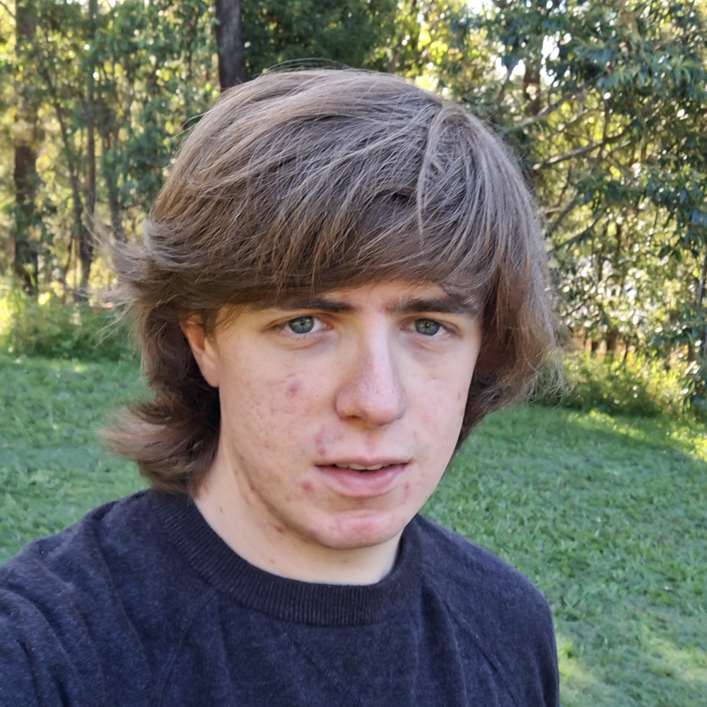

Google Scholar | GitHub | ORCID
Email: jesse.osborne [at] mpq.mpg.de
I am currently a postdoctoral researcher at the Max Planck Institute of Quantum Optics. I specialize in developing matrix-product-state computational methods for solving quantum many-body problems. My current research interests are in advancing novel methods for analysing excitations and performing time evolution simulations of a variety of physical models, from spin chains and condensed matter systems to lattice gauge theories.
I performed my undergraduate and doctoral studies at the University of Queensland, Australia. My PhD thesis is titled Matrix product state methods for excitations, which I completed under the supervision of Ian McCulloch.
Peter Majcen*, Jesse J. Osborne*, Philipp Hauke, Bing Yang, Simone Montangero, and Jad C. Halimeh
Towards 2+1D quantum electrodynamics on a cold-atom quantum simulator
Preprint: arXiv:2602.04948
Yizhuo Tian*, N. S. Srivatsa*, Kaidi Xu, Jesse J. Osborne, Umberto Borla, and Jad C. Halimeh
Role of Plaquette Term in Genuine 2+1D String Dynamics on Quantum Simulators
Preprint: arXiv:2508.05736
Rohan Joshi, Jan C. Louw, Michael Meth, Jesse J. Osborne, Kevin Mato, Guo-Xian Su, Martin Ringbauer, and Jad C. Halimeh
Probing Hadron Scattering in Lattice Gauge Theories on Qudit Quantum Computers
Preprint: arXiv:2507.12614
Rohan Joshi, Michael Meth, Jan C. Louw, Jesse J. Osborne, Kevin Mato, Martin Ringbauer, and Jad C. Halimeh
Efficient Qudit Circuit for Quench Dynamics of 2+1D Quantum Link Electrodynamics
Preprint: arXiv:2507.12589
Julian Schuhmacher, Guo-Xian Su, Jesse J. Osborne, Anthony Gandon, Jad C. Halimeh, and Ivano Tavernelli
Observation of hadron scattering in a lattice gauge theory on a quantum computer
Preprint: arXiv:2505.20387
N. S. Srivatsa, Jesse J. Osborne, Debasish Banerjee, and Jad C. Halimeh
Bosonic vs. Fermionic Matter in Quantum Simulations of 2+1D Gauge Theories
Preprint: arXiv:2504.17000
Huan-Qiang Zhou, Jesse J. Osborne, Qian-Qian Shi, and Ian P. McCulloch
Emergent Goldstone flat bands and spontaneous symmetry breaking with type-B Goldstone modes
Preprint: arXiv:2502.14605
Umberto Borla, Jesse J. Osborne, Sergej Moroz, and Jad C. Halimeh
String Breaking in a 2+1D Z2 Lattice Gauge Theory
Preprint: arXiv:2501.17929
Jared Jeyaretnam*, Tanmay Bhore*, Jesse J. Osborne, Jad C. Halimeh, and Zlatko Papić
Hilbert space fragmentation at the origin of disorder-free localization in the lattice Schwinger model
Commun. Phys. 8, 172 (2025), arXiv:2409.08320
Jesse J. Osborne and Ian P. McCulloch
Efficient and systematic calculation of arbitrary observables for the matrix product state excitation ansatz
Phys. Rev. Research 7, 023018 (2025), arXiv:2408.17117
Jesse J. Osborne, Johannes Knaute, Ian P. McCulloch, and Jad C. Halimeh
Meson Mass Sets Onset Time of Anomalous Dynamical Quantum Phase Transitions
Preprint: arXiv:2407.03394
Jesse J. Osborne, Ian P. McCulloch, and Jad C. Halimeh
Quantum many-body scarring in 2+1D gauge theories with dynamical matter
Preprint: arXiv:2403.08858, accepted in Phys. Rev. Research
Ian P. McCulloch and Jesse J. Osborne
Comment on “Controlled Bond Expansion for Density Matrix Renormalization Group Ground State Search at Single-Site Costs”
Preprint: arXiv:2403.00562
Guo-Xian Su*, Jesse J. Osborne*, and Jad C. Halimeh
Cold-Atom Particle Collider
PRX Quantum 5, 040310 (2024), arXiv:2401.05489
Jesse J. Osborne, Ian P. McCulloch, and Jad C. Halimeh
Probing confinement through dynamical quantum phase transitions: From quantum spin models to lattice gauge theories
Phys. Rev. Research 7, 043076 (2025), arXiv:2310.12210
Jesse Osborne, Bing Yang, Ian P. McCulloch, Philipp Hauke, and Jad C. Halimeh
Spin-S U(1) Quantum Link Models with Dynamical Matter on a Quantum Simulator
Preprint: arXiv:2305.06368
Jesse Osborne, Ian P. McCulloch, and Jad C. Halimeh
Disorder-Free Localization in 2+1D U(1) Lattice Gauge Theories with Dynamical Matter
Preprint: arXiv:2301.07720
Jesse J. Osborne, Ian P. McCulloch, Bing Yang, Philipp Hauke, and Jad C. Halimeh
Large-Scale 2+1D U(1) gauge theory with dynamical matter in a cold-atom quantum simulator
Commun. Phys. 8, 273 (2025), arXiv:2211.01380
© 2026 Jesse J. Osborne. This work is licensed under CC BY 4.0.